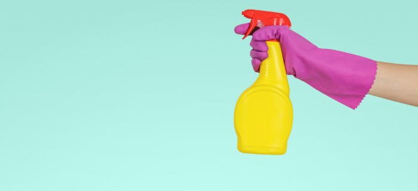
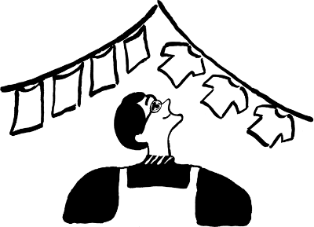
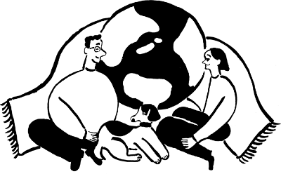

私達は、現在使っている布製品・繊維製品をお預かりし、
抗菌・抗ウイルス加工を施すことで、
その効果を恒久的に持続させることができる法人向けのサービスです。
お知らせ
- 2023.05.22 取締役及び執行役員に対する自己株式処分に関するお知らせ。
- 2023.04.16 スポンサードリサーチレポートを更新しました。
- 2023.04.08 コーポレートガバナンス報告書。
特徴

- 抗菌消臭・抗ウイルス効果が恒久的に持続
- 工業洗濯50回後も効果が持続するので、定期的に加工を施すことで、効果が恒久的に持続します。例えば、週5日洗濯するタオルを一度加工すると、単純計算で2.5か月間安心が続くことになります。

- 人にやさしく、地球にやさしく
- 加工に使用する製品には、人体に有害な禁止物は一切使っていません。また加工の際に使用する水の取水量を100%削減し、リサイクル水を使用しています。
FAQ
- どんなものにでも加工することができるのでしょうか？
- 日常的に使用されている繊維製品であれば基本的にどんなものでも加工することができますが、長期間使用していて繊維が傷んでいるもの、未使用品であっても購入から時間が経過しているもの、素材の組織が不明なものについては、加工前に検査した上でお断りさせていただく場合がございます。
- 届くまでの期間はどれくらいですか？
- 製品が到着してから最短3営業日、最長でも12営業日でのお届けとなります。
- 導入にかかるコストはどれくらいですか？
- アイテムと数量、選択頻度により変動しますが、例えばフェイスタオルサイズの製品であれば、1枚あたり300円（1日あたりのランニングコスト＝4.6円）から導入することができます。